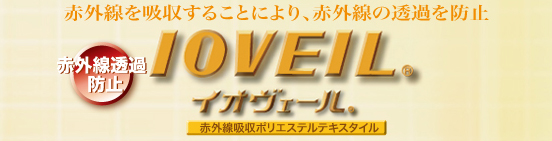
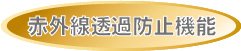
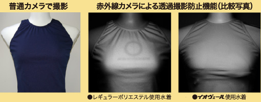
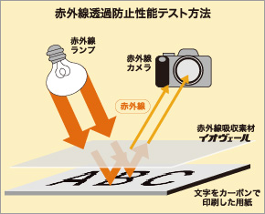

「イオヴェール」は、繊維に練り込んだ特殊剤が赤外線を吸収することで赤外線の透過を防止し、赤外線カメラでの透撮を困難にします。

繊維に練り込んだ特殊剤が、赤外線を吸収することにより赤外線の透過を防止します。
赤外線カメラで撮影しても透けにくい素材です。
※加工の条件、使用方法によっては性能に差が生じる場合がありますので、事前確認の上、ご使用ください。


水着・スポーツウェア・インナー/アウターウェア・ユニフォーム（白衣・看護・介護）etc
ＫＢセーレン株式会社
衣料資材販売部
kbs.info@kb.seiren.com